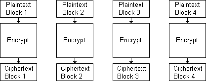
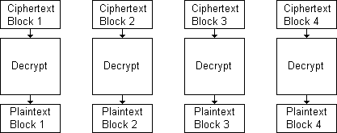
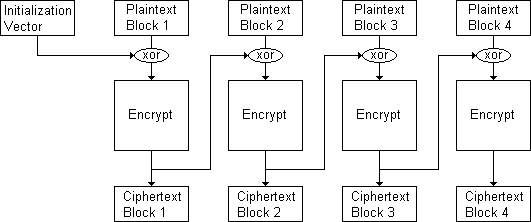
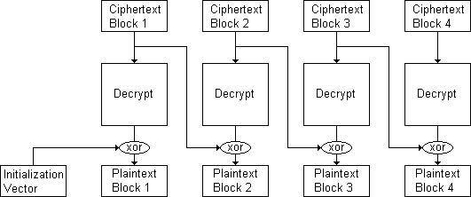

Time for DES.
Data Encryption Standard or DES - it is one of the key player in the history of modern cryptography, as it was a major agent-of-change that brought a revolution in the world of symmetric cryptography after its publication in 1977. The story behind it is very interesting and you may read it in the detailed article (link will be given shortly). About the details of how this works, that also will be explained excellently (in the article below). But before going deep into its working on one block, we will see how the overall 'block cipher' is operated in different modes. We will discuss mainly two modes here: ECB (Electronic CodeBook Mode) and the CBC (Cipher Block Chaining) mode.
It should be very clear before we proceed, that what we already have and what we try to achieve. We have already a long binary string or data which is to be encrypted, and we try to encrypt the entire data. Our obvious step in block cipher is to 'decompose' / divide entire data into different blocks (each block having 64 bits as in DES). If the entire data is exactly divisible into blocks, then it's ok; otherwise, we 'pad' the data using various schemes.
Once the above is done, now is the time to choose our 'mode' of operation that will decide how each plaintext block will be converted to ciphertext block. Let's see the two modes in detail below:
ECB or Electronic Codebook Mode
This is very simple mode. All we do is firstly break down entire data into blocks and then use our key separately with all the blocks to get the ciphertext.
This is slightly insecure because using same key to encrypt all the blocks might leave some pattern trace in the cipher blocks. The diagrams are given below:
ECB-Encryption

ECB-Decryption

CBC or Cipher Block Chaining Mode
This is a 'stronger' mode of operation. To understand it, firstly refer to the diagrams below.
Explanation: To Encrypt each block: The first block is XORed with an Initialization vector (which is a random bit string of length same as the plaintext block), the result is then encrypted using the Key and the DES algorithm, giving the ciphertext block.
From the second time to the end, the plaintext blocks are firstly XORed with the 'previous' ciphertext block; and then encrypted using the Key and the DES algorithm, to give corresponding ciphertext block.
The process continues till all the blocks are encrypted. This 'chaining' of ciphertext strengthens the overall ciphertext as there is no pattern trace of the key as there was in the case of ECB mode.
The decryption process follows a similar but reverse approach as shown in the diagrams below.
CBC-Encryption

CBC-Decryption

The 'Tool' given alongside can also be used very effectively to understand how the plaintext message is divided into blocks-of-bits, how these modes work, and even see the actual bytes being manipulated and encrypted in the intermediate steps.
In the next post we will see how the actual DES algorithm works upon one 'block' (64-bit long) of bits i.e. what processes and intermediate steps are done to encrypt the 64-bit plaintext block to 64-bit ciphertext block, using a 64-bit key.(strictly speaking, only 56 bits of the key are used. We will see the details...)
Bye till then.
:-)
Post-19 Ended.